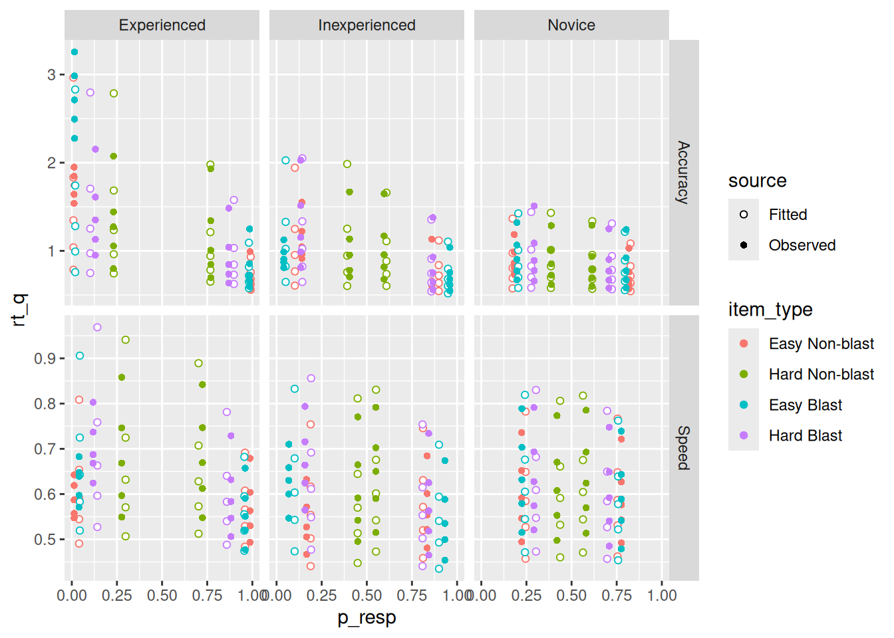

Code
knitr::include_graphics("img/blast_example_stimuli.png")This chapter presents a complete worked example of applying the diffusion model to a two-choice task. In doing so, we illustrate the kinds of data that can be modeled within this framework, how to fit the diffusion model to a typical cognitive dataset, and some ways we can use the resulting fits to draw inferences about the cognitive processes behind the choices people made.
The data for this example were reported originally by Trueblood et al. (2018). There’s a lot about this study that we won’t get to here, and I encourage you to check out the original paper.
Participants in this study did several blocks of a categorization task. The stimuli used in this task were images of cells that were either indicative of cancer—these are called “blast” cells—or normal—these are “non-blast” cells. The images were further subdivided into “easy” and “hard” versions, based on expert judgments. The image below illustrates the kinds of images that participants would see in this task.
knitr::include_graphics("img/blast_example_stimuli.png")After several blocks of training in which participants became familiar with these kinds of images (if they were not already; see below), participants moved on to the categorization task. On each trial of this task, an image was shown. Blast and non-blast images were shown equally often. Easy and hard versions of each type were also shown at the same rates. The participant’s job was to decide whether or not each image was a “blast” cell. The categorization task was itself divided into several blocks, each of which was a different type. We will be looking at data from two types of block: “Accuracy” blocks in which participants were encouraged to take their time and be accurate in their categorization of each image; and “Speed” blocks in which participants were encouraged to make their decisions quickly without regard to accuracy.
The participants in this study came from three different groups. Novice participants were just that—typical undergraduate university students who had no prior experience with these kinds of medical images. Inexperienced participants were pathologists who had just begun their training, so while they would be knowledgeable about these kinds of images, they might not have much practice categorizing them. Experienced participants were pathologists who had completed at least four training rotations who would have had plenty of practice dealing with these kinds of images.
Finally, I note that, in addition to the blast/non-blast categorization task, all participants did a “Novel Object Memory Task” (NOMT) designed to measure their general ability to recognize visual objects, not just medical images of cells.
You can download the data from this study that we will be examining in this tutorial by running the code below. The first line downloads the data to a file called blast_data.rdata in your current working directory. The second line loads that data into your R environment.
download.file("https://github.com/gregcox7/choice_rt_models/raw/refs/heads/main/data/blast_data.rdata", "blast_data.rdata")
load("blast_data.rdata")The data should now be in your R environment in a data frame called blast_data. Let’s take a look at that data now:
glimpse(blast_data)Rows: 21,628
Columns: 15
$ dateCompleted <chr> "30/6/2017 @ 10:15:24", "30/6/2017 @ 10:15:26", "30/6…
$ block <int> 2, 2, 2, 2, 2, 2, 2, 2, 2, 2, 2, 2, 2, 2, 2, 2, 2, 2,…
$ blockType <fct> Speed, Speed, Speed, Speed, Speed, Speed, Speed, Spee…
$ trial <int> 1, 2, 3, 4, 5, 6, 7, 8, 9, 10, 11, 12, 13, 15, 16, 17…
$ stimulus <chr> "nonBlastEasy/SNE_25598565.jpg", "blastHard/BL_406213…
$ difficulty <fct> Easy, Hard, Easy, Hard, Hard, Easy, Easy, Hard, Easy,…
$ response <fct> Non-blast, Blast, Blast, Blast, Non-blast, Non-blast,…
$ rt <dbl> 0.662, 0.496, 0.528, 0.431, 0.817, 0.495, 0.540, 0.68…
$ correct_response <fct> Non-blast, Blast, Blast, Blast, Blast, Non-blast, Non…
$ bias_shown <fct> Bias not shown, Bias not shown, Bias not shown, Bias …
$ subject <chr> "M002", "M002", "M002", "M002", "M002", "M002", "M002…
$ group <fct> Experienced, Experienced, Experienced, Experienced, E…
$ nomt_corr <dbl> 99, 99, 99, 99, 99, 99, 99, 99, 99, 99, 99, 99, 99, 9…
$ nomt_n <int> 108, 108, 108, 108, 108, 108, 108, 108, 108, 108, 108…
$ nomt <dbl> 0.9166667, 0.9166667, 0.9166667, 0.9166667, 0.9166667…We can already see the columns that will be most important for us:
blockType: Whether the block instructions emphasized Accuracy or Speed.correct_response: Whether the image on that trial was a Blast or Non-blast cell.difficulty: Whether the image on that trial was Easy or Hard.rt: The response time (RT) in seconds.response: Whether the participant classified the image as a Blast or Non-blast cell.subject: An identifier for each individual participant.group: Which of the three groups the participant came from (Experienced, Inexperienced, or Novice).nomt: The score on the Novel Object Memory Test (NOMT) for the participant on that trial.In the next section, we will fit a diffusion model to data from every participant. Before we do that, though, let’s see how to do it for a single participant. We will replicate this procedure for each individual participant in the next section.
I arbitrarily picked the participant with ID “M003” for us to examine. The code below uses the filter function to extract the data from just this participant:
subj_data <- blast_data %>%
filter(subject == "M003")For the next bit, make sure that you have sourced the wienr_fit_utils.r script:
source("wienr_fit_utils.r")If we omit the par argument, we can use the qp_fit function to get the observed response proportions and RT quantiles and make a quantile-probability plot of the observed data. However, to do this, we need to decide how to group the individual trials using the “indexing” trick we used in the last chapter. The way we do this will ultimately inform what diffusion model parameters we will estimate, so it is worth putting in the thought now.
Specifically, we need to think about what factors would influence the drift rate of the evidence being accumulated on each trial, what factors would influence how the participant sets their response boundaries on a given trial, and what factors might influence the residual time on each trial. Later, we will also consider how trial-by-trial variability in these three aspects of the model might or might not vary between conditions.
The “evidence” in this task arises from some kind of evaluation of how much the image looks like what the participant thinks of as a “blast” cell versus a “non-blast” cell. In other words, the “evidence” should depend on whether the image on that trial shows a blast or non-blast cell, just like how “evidence” in recognition memory depends on whether the test item is a target or foil. In addition, we would expect “hard” images to yield worse evidence than “easy” images, by definition. These two aspects of the data are reflected in the difficulty and correct_response columns. So we can specify a drift_index based on the interaction between these two factors.
The emphasis of the current block—Accuracy vs. Speed—could also impact drift rates (Rae et al., 2014), though exploring that possibility is left as an exercise for the reader.
The response boundaries cannot be influenced by the type of image shown on a trial—if they were, then the participant would already know what kind of image they were seeing! On the other hand, it is reasonable to expect that participants would adjust their response boundaries depending on whether the current block emphasized speed or accuracy. This suggests that we can define a bound_index using the blockType column in the data.
If residual time reflects only the processes involved in executing the motor response associated with a choice, then we might expect it to be unaffected by any experimental factors. On the other hand, it may be that participants are able to adjust their “response vigor” in light of speed/accuracy emphasis. In addition, it may be that participants can more quickly orient their attention to a stimulus if speed is emphasized. So we can specify a resid_index that also depends on blockType.
On the basis of the considerations above, we will define three indices: one that specifies what conditions can have different drift rates (drift_index), one that specifies what conditions can have different response boundaries (bound_index), and one that specifies what conditions can have different residual time (resid_index):
subj_data <- subj_data %>%
mutate(
drift_index = as.numeric(interaction(difficulty, correct_response)),
bound_index = as.numeric(blockType),
resid_index = as.numeric(blockType)
)It is important to keep in mind that the grouping defined above is not necessarily the “one true grouping”! It is merely meant to give a sense of the kind of things to think about when deciding how different model parameters will be assigned to different conditions.
Having defined our indices, we can pass them to the qp_fit function so that we can make a quantile-probability plot of this participant’s data. Note that I had to
obs_qp <- qp_fit(
rt = subj_data$rt,
response = subj_data$response,
drift_index = subj_data$drift_index,
bound_index = subj_data$bound_index,
resid_index = subj_data$resid_index
)Joining with `by = join_by(drift_index, bound_index, resid_index, sv_index,
sw_index, st0_index, response)`When making the plot, I found it helpful to “undo” the transformation of the different factors into numerical indices. That “undoing” is the purpose of the two mutate lines.
obs_qp %>%
mutate(item_type = factor(drift_index, levels = 1:4, labels = levels(interaction(blast_data$difficulty, blast_data$correct_response)))) %>%
mutate(blockType = factor(bound_index, levels = 1:2, labels = levels(blast_data$blockType))) %>%
ggplot(aes(x = p_resp, y = rt_q, color = item_type, shape = response)) +
geom_point() +
expand_limits(x = c(0, 1)) +
labs(x = "Response probability", y = "RT quantile") +
facet_wrap("blockType")It is worth noting a few features of these data that are apparent from the quantile-probability plot. First, this participant was indeed faster in the Speed block than the Accuracy block. Even the faster RT’s (the 0.1 quantiles) are faster in the Speed block, supporting the idea that residual time could differ between blocks if residual time represents the minimal time needed to respond. It also looks like this participant was less accurate in the Speed block—at least for Blast images, they had nearly perfect accuracy in the Accuracy block but not in the speed block. This participant was not very good in either block at categorizing Non-blast images. It doesn’t look like difficulty (Easy vs. Hard) made a big difference for this participant in terms of their choice/RT behavior. Finally, it looks like this participant’s errors tended to be a bit slower than their correct responses, suggesting that the diffusion model will need to allow for trial-by-trial variability in drift rates to accommodate these data. This same consideration suggests that we don’t need to assume variability in boundaries (since that would produce fast errors instead).
With all the preliminaries out of the way, let’s try fitting a diffusion model to this participant’s data. This will look just like it did in the last chapter, only with real data instead of simulated data!
We have already decided how to assign parameters to trials using the indices we defined in the previous section. We also have good reason to believe that drift rates can vary from trial to trial. We can estimate \(s_v\), the standard deviation of the trial-by-trial distribution of drift rates, by including the argument fit_sv = TRUE to the fit_wienr function. We don’t have reason to assume variability in boundaries, which would be reflected in the \(s_w\) parameter, but we could do so if we passed fit_sw = TRUE to fit_wienr. Finally, we will allow for variability in residual time by including fit_st0 = TRUE in the function call to fit_wienr.
For present purposes, we will only estimate one value of \(s_v\) and one value of \(s_{t_0}\) parameter, and these values will apply to all trials. If we wanted to allow them to vary, we could pass a sv_index, sw_index, or st0_index vector to the fit_wienr function—these index vectors work just like the drift_index, bound_index, and resid_index vectors we defined above.
Putting it all together, the code below fits our desired diffusion model to this participant’s choice and RT data.
subj_fit <- fit_wienr(
rt = subj_data$rt,
response = subj_data$response,
fit_sv = TRUE,
fit_sw = FALSE,
fit_st0 = TRUE,
drift_index = subj_data$drift_index,
bound_index = subj_data$bound_index,
resid_index = subj_data$resid_index
)Let’s have a look at the estimated parameter values:
subj_fit$par a[1] a[2] v[1] v[2] v[3] v[4] w[1]
1.3875689 0.9074497 -0.9075545 -0.3305451 1.5610599 1.6110799 0.6583813
w[2] t0[1] t0[2] sv[1] st0[1]
0.6743305 0.3969458 0.3926721 0.7117295 0.1218538 The first two parameters are the response caution parameters, with a[1] corresponding to the Accuracy blocks and a[2] to the Speed blocks. As we might expect, the fact thata a[2] \(<\) a[1] tells us that this participant was less cautious in the Speed blocks, being more willing to sacrifice accuracy for speed. Skipping ahead to w[1] and w[2], these parameters tell us that this participant was biased toward calling images “Blast” images in both Accuracy and Speed blocks (the response caution and response bias parameters have the same indices). Although we allowed for residual time to vary between Accuracy and Speed blocks, the estimates t0[1] and t0[2] look pretty similar to one another.
The drift rate parameters also make some sense: v[1], for easy non-blast images, is negative and has a greater magnitude than v[2], for hard non-blast images. The magnitudes of the drift rates for Blast images, v[3] and v[4], are greater than for the non-blast images and are not too different from one another, in accord with our observation that this participant was better at identifying blast images than non-blasts and that the difficulty of the blast image didn’t seem to matter much.
Finally, we can see that the drift-rate variability parameter sv[1] and the residual time variability parameter st0[1] are both greater than zero. That said, we did not have strong theoretical reasons to expect these parameters to take any particular value—we just suspected they would be important to account for the data. We can verify that intuition by fitting a model without any trial-by-trial variability and seeing whether AIC and/or BIC still prefers the more complex model with both forms of variability.
subj_fit_novar <- fit_wienr(
rt = subj_data$rt,
response = subj_data$response,
fit_sv = FALSE,
fit_sw = FALSE,
fit_st0 = FALSE,
drift_index = subj_data$drift_index,
bound_index = subj_data$bound_index,
resid_index = subj_data$resid_index
)
aic_wvar <- 2 * subj_fit$value + 2 * length(subj_fit$par)
aic_novar <- 2 * subj_fit_novar$value + 2 * length(subj_fit_novar$par)
bic_wvar <- 2 * subj_fit$value + log(nrow(subj_data)) * length(subj_fit$par)
bic_novar <- 2 * subj_fit_novar$value + log(nrow(subj_data)) * length(subj_fit_novar$par)
c(aic_wvar, aic_novar)[1] 8.878357 64.029238c(bic_wvar, bic_novar)[1] 56.68559 103.86860Both AIC and BIC are lower for the model with trial-by-trial variability, suggesting that this additional complexity is warranted in light of the data.
Having fit a diffusion model to one participant, we will now replicate that procedure for every participant. First, it will be convenient to define our three index vectors using the whole dataset:
blast_data <- blast_data %>%
mutate(
drift_index = as.numeric(interaction(difficulty, correct_response, drop = TRUE)),
bound_index = as.numeric(blockType),
resid_index = as.numeric(blockType)
)Now comes the big stuff. We will write a for loop that does the following for each participant:
model_pars. This is so we can examine the estimated parameters later.model_qp. This is so we can verify that the model is fitting the data.All of that is accomplished with the following chunk of R code, which begins by using the unique function to extract all the unique participant ID’s in the dataset. Note that this is used to define what the for loop iterates over. This will take a while to run, but patience is a virtue!
subj_to_fit <- unique(blast_data$subject)
model_pars <- c()
model_qp <- c()
for (id in subj_to_fit) {
this_subj_data <- blast_data %>%
filter(subject == id)
this_fit <- fit_wienr(
rt = this_subj_data$rt,
response = (this_subj_data$response == "Blast") + 1,
fit_sv = TRUE,
fit_sw = FALSE,
fit_st0 = TRUE,
drift_index = this_subj_data$drift_index,
bound_index = this_subj_data$bound_index,
resid_index = this_subj_data$resid_index
)
model_pars <- rbind(
model_pars,
tibble(subject = id, group = this_subj_data$group[1], par_name = names(this_fit$par), val = this_fit$par) %>% extract(par_name, into = c("par", "index"), regex = "(.+)\\[(.+)\\]")
)
this_qp <- qp_fit(
rt = this_subj_data$rt,
response = (this_subj_data$response == "Blast") + 1,
par = this_fit$par,
drift_index = this_subj_data$drift_index,
bound_index = this_subj_data$bound_index,
resid_index = this_subj_data$resid_index
) %>%
mutate(subject = id, group = this_subj_data$group[1])
model_qp <- rbind(
model_qp,
this_qp
)
}Once we have our parameter estimates safely stored in model_pars, we can visualize the resulting estimates using color to distinguish between the three groups. The plot below was made by using tiny, slightly faded points for each individual participant (note the alpha = 0.5, size = 0.5 settings in the geom_point line). Overlaid on those is a big point with error bars that shows the mean and 95% confidence interval for the mean, computed separately for each group.
model_pars %>%
ggplot(aes(x = index, y = val, color = group, shape = group)) +
geom_point(position = position_jitterdodge(jitter.width = 0.1, dodge.width = 0.4), alpha = 0.5, size = 0.5) +
stat_summary(geom = "pointrange", fun.data = mean_cl_boot, position = position_dodge(width = 0.4)) +
labs(x = "Index", y = "Estimated value", color = "Group") +
facet_wrap("par", scales = "free")Let’s focus first on a, the response caution parameter. As we know, a[1] corresponds to the Accuracy blocks while a[2] corresponds to the Speed blocks. It certainly looks like participants, on average, had lower response caution in the Speed blocks than in the Accuracy blocks. It also looks like the more experienced participants tended to have greater response caution in both block types.
To get some statistical evidence for differences between groups and between conditions, we can use our old friend, the Analysis of Variance (ANOVA). While you might normally think of applying ANOVA to observed values, like mean response time or accuracy, it can be applied just as well to estimated parameter values. In both cases, we have a single value for each participant in each condition and we are testing the null hypothesis that the parameter estimate does not differ, on average, between conditions/groups.
To do ANOVA, I’ll use the afex R package and make sure to run its set_sum_contrasts() function (by default, R uses “treatment” contrasts, which are not always appropriate).
library(afex)Loading required package: lme4Loading required package: Matrix
Attaching package: 'Matrix'The following objects are masked from 'package:tidyr':
expand, pack, unpackRegistered S3 methods overwritten by 'car':
method from
influence.merMod lme4
cooks.distance.influence.merMod lme4
dfbeta.influence.merMod lme4
dfbetas.influence.merMod lme4************
Welcome to afex. For support visit: http://afex.singmann.science/- Functions for ANOVAs: aov_car(), aov_ez(), and aov_4()
- Methods for calculating p-values with mixed(): 'KR', 'S', 'LRT', and 'PB'
- 'afex_aov' and 'mixed' objects can be passed to emmeans() for follow-up tests
- NEWS: library('emmeans') now needs to be called explicitly!
- Get and set global package options with: afex_options()
- Set orthogonal sum-to-zero contrasts globally: set_sum_contrasts()
- For example analyses see: browseVignettes("afex")
************
Attaching package: 'afex'The following object is masked from 'package:lme4':
lmerset_sum_contrasts()setting contr.sum globally: options(contrasts=c('contr.sum', 'contr.poly'))Now, we can use the aov_ez function to do the ANOVA on the a parameter estimates.
aov_ez(
id = "subject", # Specify the name of the column that identifies unique participants
dv = "val", # Specify the name of the column that contains the values to be analyzed
data = model_pars %>% filter(par == "a"), # The data for this ANOVA is stored in "model_pars", but we are only interested in the estimates of the "a" parameter
between = "group", # Specify the name of the column that identifies between-subject comparisons
within = "index" # Specify the name of the column that identifies within-subject comparisons
)Anova Table (Type 3 tests)
Response: val
Effect df MSE F ges p.value
1 group 2, 52 0.15 17.86 *** .264 <.001
2 index 1, 52 0.14 129.70 *** .544 <.001
3 group:index 2, 52 0.14 9.23 *** .145 <.001
---
Signif. codes: 0 '***' 0.001 '**' 0.01 '*' 0.05 '+' 0.1 ' ' 1As we can see, there is a main effect of “group”, consistent with our observation that more experienced participants had higher response caution. There is also a main effect of “index”, consistent with our observation that participants tended to set lower response caution in Speed blocks. Finally, there is a significant interaction between “group” and “index”, although it looks from the graph above that this is likely to be a “fan” interaction, with a bigger increase from Speed to Accuracy for the more experienced participants.
Now, let’s consider the drift rate parameters. Again, we will use ANOVA to look for statistical evidence of differences in drift rates between groups and between conditions. Things are a little more complicated, though, because drift rate was allowed to vary by both difficulty and image type (blast vs. non-blast). To properly specify the ANOVA, then, we should “undo” the drift rate indices back into those original two factors. That’s what the mutate lines in the data specification do in the code below.
aov_ez(
id = "subject",
dv = "val",
data = model_pars %>%
filter(par == "v") %>%
mutate(
difficulty = factor(index, levels = 1:4, labels = c("Easy", "Hard", "Easy", "Hard")),
correct_response = factor(index, levels = 1:4, labels = c("Non-blast", "Non-blast", "Blast", "Blast"))),
between = "group",
within = c("difficulty", "correct_response")
)Anova Table (Type 3 tests)
Response: val
Effect df MSE F ges p.value
1 group 2, 52 1.65 0.02 <.001 .980
2 difficulty 1, 52 0.25 68.87 *** .052 <.001
3 group:difficulty 2, 52 0.25 3.24 * .005 .047
4 correct_response 1, 52 3.37 252.60 *** .728 <.001
5 group:correct_response 2, 52 3.37 21.45 *** .313 <.001
6 difficulty:correct_response 1, 52 0.83 164.02 *** .300 <.001
7 group:difficulty:correct_response 2, 52 0.83 16.01 *** .077 <.001
---
Signif. codes: 0 '***' 0.001 '**' 0.01 '*' 0.05 '+' 0.1 ' ' 1The ANOVA finds evidence for significant differences for all but “group” on its own. However, this analysis is a bit misleading in that, as you’ll recall, drift rates for non-blast images tend to be negative while drift rates for blast images tend to be positive. We may be more interested in analyzing how drift rates toward the correct response boundary may or may not differ between groups/conditions.
To do this, we can add another mutate line that reverses the sign of the estimated drift rates for non-blast images:
aov_ez(
id = "subject",
dv = "val",
data = model_pars %>%
filter(par == "v") %>%
mutate(
difficulty = factor(index, levels = 1:4, labels = c("Easy", "Hard", "Easy", "Hard")),
correct_response = factor(index, levels = 1:4, labels = c("Non-blast", "Non-blast", "Blast", "Blast")),
val = if_else(correct_response == "Blast", val, -val)),
between = "group",
within = c("difficulty", "correct_response")
)Anova Table (Type 3 tests)
Response: val
Effect df MSE F ges p.value
1 group 2, 52 3.37 21.45 *** .313 <.001
2 difficulty 1, 52 0.83 164.02 *** .300 <.001
3 group:difficulty 2, 52 0.83 16.01 *** .077 <.001
4 correct_response 1, 52 1.65 0.31 .002 .578
5 group:correct_response 2, 52 1.65 0.02 <.001 .980
6 difficulty:correct_response 1, 52 0.25 68.87 *** .052 <.001
7 group:difficulty:correct_response 2, 52 0.25 3.24 * .005 .047
---
Signif. codes: 0 '***' 0.001 '**' 0.01 '*' 0.05 '+' 0.1 ' ' 1Now the ANOVA correctly detects a main effect of group that was obscured in the previous analysis, among other things.
Finally, recall that each participant also completed the “NOMT”, a test of general visual object processing ability. It would be reasonable to ask whether participants who have high NOMT scores also tend to have higher drift rates toward the correct response boundary. To analyze this, we need to first extract the NOMT scores for each participant, append them to the model parameter estimates, and include NOMT as a covariate in the ANOVA. For interpretability, I also “center” the NOMT scores by subtracting the group mean.
# Extract NOMT scores and center them.
nomt_scores <- blast_data %>%
group_by(group, subject) %>%
summarize(nomt = first(nomt)) %>%
mutate(nomt_centered = nomt - mean(nomt))`summarise()` has grouped output by 'group'. You can override using the
`.groups` argument.# Append the NOMT scores to the parameter estimates
model_pars_nomt <- left_join(model_pars, nomt_scores)Joining with `by = join_by(group, subject)`# Run the same ANOVA as above, now including `nomt_centered` as a `covariate`
aov_ez(
id = "subject",
dv = "val",
data = model_pars_nomt %>%
filter(par == "v") %>%
mutate(
difficulty = factor(index, levels = 1:4, labels = c("Easy", "Hard", "Easy", "Hard")),
correct_response = factor(index, levels = 1:4, labels = c("Non-blast", "Non-blast", "Blast", "Blast")),
val = if_else(correct_response == "Blast", val, -val)),
between = "group",
within = c("difficulty", "correct_response"),
covariate = "nomt_centered",
factorize = FALSE # This last setting is necessary to ensure that "nomt_centered" isn't accidentally treated like a factor
)Anova Table (Type 3 tests)
Response: val
Effect df MSE F ges
1 group 2, 51 3.05 23.64 *** .334
2 nomt_centered 1, 51 3.05 6.33 * .063
3 difficulty 1, 51 0.68 199.27 *** .320
4 group:difficulty 2, 51 0.68 19.46 *** .084
5 nomt_centered:difficulty 1, 51 0.68 12.18 ** .028
6 correct_response 1, 51 1.67 0.31 .002
7 group:correct_response 2, 51 1.67 0.02 <.001
8 nomt_centered:correct_response 1, 51 1.67 0.34 .002
9 difficulty:correct_response 1, 51 0.24 71.48 *** .057
10 group:difficulty:correct_response 2, 51 0.24 3.36 * .006
11 nomt_centered:difficulty:correct_response 1, 51 0.24 2.97 + .003
p.value
1 <.001
2 .015
3 <.001
4 <.001
5 .001
6 .581
7 .980
8 .562
9 <.001
10 .043
11 .091
---
Signif. codes: 0 '***' 0.001 '**' 0.01 '*' 0.05 '+' 0.1 ' ' 1In fact, it looks like NOMT not only has a main effect on drift rates, it also interacts with difficulty, suggesting that group differences alone do not account for individual differences in performance on this task—categorizing images of cells also seems to depend on general object processing ability.
Finally, we come to the most challenging section: How to visualize the quality of the model fit. We could, of course, produce quantile-probability plots for each participant separately, but this would only be feasible with very few participants.
Instead, the code below plots the observed and fitted RT quantiles and response probabilities averaged over the participants in each group. This is not meant to be the final word, but just a way to verify that the model is close to the data and that it is accurately reproducing the important aspects of the data.
model_qp %>%
mutate(
blockType = factor(bound_index, labels = levels(blast_data$blockType)),
item_type = factor(drift_index, labels = levels(interaction(blast_data$difficulty, blast_data$correct_response, sep = " ", drop = T)))
) %>%
group_by(group, blockType, item_type, response, source, rt_p) %>%
summarize(rt_q = mean(rt_q, na.rm = TRUE), p_resp = mean(p_resp, na.rm = TRUE)) %>%
ggplot(aes(x = p_resp, y = rt_q, color = item_type)) +
geom_point(aes(shape = source), fill = "white") +
scale_linetype_manual(values = c("Observed" = "solid", "Fitted" = "dashed")) +
scale_shape_manual(values = c("Observed" = 16, "Fitted" = 21)) +
facet_grid(blockType ~ group, scales = "free_y")`summarise()` has grouped output by 'group', 'blockType', 'item_type',
'response', 'source'. You can override using the `.groups` argument.Warning: No shared levels found between `names(values)` of the manual scale and the
data's linetype values.
The upshot is that it looke like the model is, at least on average, doing a very good job of capturing the response proportion and a pretty good one capturing the RT quantiles. That said, some of the misfits for the highest and lowest quantiles (see, e.g., the green points in the “Speed” conditions) may be due to sampling error, as discussed earlier.
w), residual time (t0), and the two variability parameters (sv and st0). Do you find evidence for differences, on average, between groups or between conditions (for sv and st0, you can only compare between groups)?sv_index and st0_index parameters, modify the diffusion model we used above so that drift rate variability and residual time variability can also vary by block type. Does this more complex model provide a better account of the data, as scored by either AIC or BIC?